2．算术和代数作为一门独立学科的发展
以上回顾了希腊人在两个时期里做算术的方法，特别是在几何与三角成为定量学科时的亚历山大时期。但本章所要讲的主要发展是算术和代数脱离几何而成为独立的学科。阿基米德、阿波罗尼斯和托勒玫的算术工作是走往这方向的一步，但他们是用算术来计算几何量的。我们可能由此认为他们之所以注重数只是因为数能代表几何的量，而数的运算的逻辑基础是由几何代数法来保证的。但赫伦、尼科马修斯（Nichomachus，约公元100年）［他可能是来自犹太格拉撒（Gerasa in Judea）的阿拉伯人］和亚历山大的希腊人丢番图（约公元250年）则确实把算术和代数问题本身作为问题来处理，既不依靠几何引出，也不用它来作逻辑依据。
比赫伦在算术方面求平方根或立方根的工作更重要的是他用纯粹算术方法提出和解决了代数问题。他没有采用特别的符号；他是用文字来陈述的。例如他处理这样一个问题：给定一正方形，知其面积与周长之和为896尺（原文如此。——译者），求其一边。这问题用我们的记法是，求满足x2＋4x＝896的x。赫伦在方程两边加上4配成完全平方然后开方。他并不进行证明而只说出做哪些运算。在他的著作里有许多这类问题。当然，这正好是古代埃及人和巴比伦人提出问题和解决问题的方式，而且赫伦无疑从古代埃及和巴比伦书里抄取不少材料。在那些书里，我们可能记得，代数是独立于几何的，而对于赫伦来说，代数则是算术的推广。
赫伦在他的《几何》一书中提到加一块面积、一个周长和一个直径。他用这些话所表示的意思当然是指要加上它们的数值。同样，当他说他用一个正方形乘一个正方形，意思是要求两个数值的乘积。赫伦又把不少希腊的几何代数法翻译成算术和代数步骤。
赫伦在这方面的工作（以及他利用埃及人算面积和体积的近似公式）有时被人估计为希腊几何学衰落的开始。但更妥当的看法是把它作为巴比伦和埃及数学在希腊人手里的一个改进。当赫伦把面积与线段相加时，他并不是在胡乱应用古典希腊几何，而只是沿袭巴比伦人的习惯，因他们所说的面积和长度只不过是代表算术上某些未知量的用语。
从算术以一门独立学科重新出现这一角度来讲，尼科马修斯的著作是更为重要的。他撰写了包含两篇的《算术入门》（Introductio Arithmetica）一书。这是第一本篇幅颇为可观的完全脱离几何讲法的算术（意即数论）书。从历史意义上讲，它对于算术的重要性可以和欧几里得的《原本》对于几何的重要性相比。这书不仅为后世几十名作者所自学、参考和抄袭，并且是同时代别的作家所著许多书的典范，因而反映了当时人的兴趣所在。那里的数代表对象的数量而不再像欧几里得书中那样用线段来把它形象化。尼科马修斯提到数的时候通篇都用文字，而欧几里得则用一个字母如A或两个字母如BC（在这第二种情形下指线段）来代表数。因此尼科马修斯的讲法是啰唆些。他只论述整数和整数的比。
尼科马修斯是个毕达哥拉斯派人；虽然毕达哥拉斯的传统并未死亡，但他使这一传统重新活跃起来。在柏拉图所强调指出的四门学科——算术、几何、音乐和天文中，尼科马修斯说算术是其他各科之母。他认为，这
不仅是因为我们说它在造物主的心中先于其他一切而存在，被创世主作为一种普天下适用的至高方案来使用，以使他所创造的物质世界秩序井然并使之达到应有的目标；而且也因为它本来就是出生较早的……
他接着说算术对其他各门科学至为重要，因为没有它别的科学就不能存在。而若其他科学被取消，算术却仍能存在。
《算术入门》的主要内容是早期毕达哥拉斯派在算术方面的工作。尼科马修斯讲述了偶数、奇数、正方形数、矩形数和多角形数。他也论述了质数和复合数以及六面体数［形式为n2（n＋1）的数］，此外又定义了别的许多种数。他给出了1到9的乘法表，和今日学习的九九表一模一样。
尼科马修斯重复给出了毕达哥拉斯派的一些定理，如相继两个三角形数之和是正方形数而反之亦然等。他比毕达哥拉斯派更进一步能看出（虽然并未证明）一般性的关系。例如他说第（n-1）个三角形数加上第n个k角形数会得出第n个k＋1角形数。又如，第（n-1）个三角形数加上第n个正方形数得出第n个五角形数。用我们的记号就是
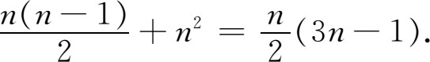
再如，第n个三角形数，第n个正方形数，第n个五角形数等，形成一个递进算术数列，其公差为第（n-1）个三角形数。
他发现以下的命题：若把奇数写出
1，3，5，7，9，11，13，15，17，…
则第一数是1的立方，其后两数之和是2的立方，再往下的三个数之和是3的立方等。关于递进数列他还有别的一些命题。
尼科马修斯给出四个完全数6，28，496和8128，并重复给出欧几里得关于完全数的公式。他把各种各样的比加以分类，并给它们起名，其中包括（m＋1）∶m，（2m＋n）∶（m＋n）以及（mn＋1）∶n。这些比在音乐上是重要的。
他也研究比例，并说这对“自然科学、音乐、球面三角和平面几何，尤其是对于研究古代数学家”非常必要。他给出好多类比例，其中有音乐比例
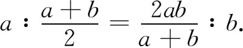
在《算术入门》中他又给出埃拉托斯特尼筛（这在第7章里还要细谈）；这是较快得出质数的方法。我们先把3以后的奇数尽量写下来，然后划掉3的倍数，即划掉3以后的每第三个数。其次我们去掉所有5的倍数（或者5以后的每第五个数，但数的时候以前可能划掉了的仍要算上）。然后去掉7以后的每第7个数等。已被划掉的数没有一个能作为这一筛划步骤的出发点。把2同那些没有划掉的数放在一起。这些数就是质数。
尼科马修斯常用一些特殊的数来讨论数的各种分类和比例。他举的例子能说明和解释他所提出的定理，但除举例外就没有做别的事来证明任何一般结论。他并不用演绎证明。
《算术入门》一书之所以有价值，是因为他对整数及整数之比的算术，作了有系统、有条理、清楚而内容丰富的叙述，而且完全不依赖于几何。从思想内容上讲它并无独到之处，但它是一本很有用的汇编。它里面还收集了关于数的思辨方面的、美学上的、神秘性的道德性的臆说，但没有谈实际应用。《算术入门》在此后1000年间成为一本标准课本。自尼科马修斯以后，算术而不是几何成为风行于亚历山大时期的学问。
这时代数也开始占重要地位。用代数技巧解问题的书也问世了。有些问题则正是公元前2000年巴比伦书本里或莱因德草片纸上所载的。希腊代数著作是纯粹用文字形式写出的；没有采用一套符号。此外，对所作运算步骤也未给予证明。自尼科马修斯以后，人们拿那些导出方程的代数题作为一般消遣的难题。这种题目约有50个到60个还保留在10世纪的一本书里（Palatine Codex of Greek Epigrams）。这里面至少有30题被认为是梅特罗多鲁斯（Metrodorus，约公元500年）所提出的，但肯定以前就有。其中之一是阿基米德牛群问题，要求根据给定的一些条件求出不同颜色的公牛和母牛的头数。另一个是欧几里得提出的关于骡子和驴驮运粮食的问题。再一个是求桶里注满水所需时间的问题。此外还有我们代数课本中的那种年龄问题。
亚历山大时期的希腊代数到丢番图时臻于最高点。关于此人的出身和生平我们几乎一无所知；但他可能是希腊人。在一本希腊问题集里有一个问题给出了他生平的下列事实：他的童年时代占一生的1/6；过（一生的）1/12后他开始长胡子；再过（一生的）1/7后他结婚；婚后5年生了个孩子。孩子活到他爹一半的年纪，而孩子死后4年他爹也死了。这问题是要求出丢番图究竟活了多大年纪。答案84岁是容易求出的。他的著作远远超出他的同时代人；但可惜出来得太晚而不能对他那个时代起太大影响，因为一股吞噬文明的毁灭性浪潮正在掀起。
丢番图写过几本现已全部失传的书。他的《论多角数》（On Polygonal Numbers）有部分内容为今人所知，其中他按《原本》第七、八、九篇的演绎方式给出定理并予以证明；但那些定理中没有什么了不起的东西。他的一部巨著是《算术》（Arithmetica），据他自己说共十三篇。现尚存六篇，得自13世纪希腊手抄稿和其后的一些译本。
《算术》也像莱因德的草片纸本一样是个别问题的汇集。作者在题词中说这是为帮助学生学习这门课而写的一些练习题。丢番图作出的一步重大的进展是在代数中采用一套符号。由于我们没有他的亲笔手稿而只看到很久以后的本子，所以不能确切知道他引入了哪些符号。据说他用来表示未知量的记号是
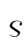
，就像我们的x一样。这可能同用在希腊字末尾的那个希腊字母σ是一样的［例如在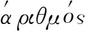
（算术）之末］，而丢番图之所以用它来表示未知量，可能就是因为用字母表示数的希腊记数制中只有这个字母没有被用来表示数。丢番图把未知量称作“题中的数”。我们的x2丢番图记为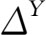
，而Δ是希腊字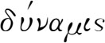
（dynamis，幂）的第一个字母。x3是KY；这K是从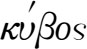
（cubos，立方）而来的。x4是ΔYΔ；x5是ΔKY；x6是KYK。在这套符号里，KY没有清楚地表明是的立方，而我们的x3则明白表示出它是x的立方。丢番图的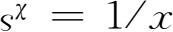
。他又用一些名词称呼这些乘幂，例如称x为数，称x2为平方，称x3为立方，称x4为平方平方（dynamodynamis），称x5为平方-立方，称x6为立方立方(1)。出现这一套符号当然是了不起的，但他使用三次以上的高次乘幂更是件了不起的事。古典希腊数学家不能也不愿考虑含三个以上因子的乘积，因为这种乘积没有几何意义。但在纯算术中，这种乘积却确有其意义；而这正是丢番图所采取的观点。
丢番图写加法时把相加的各项并列在一起。例如
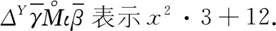
这
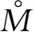
是个单位元素符号，它表示其后是个不含未知量的纯数。又如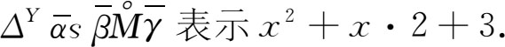
他的减号是
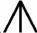
。例如他把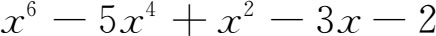
写成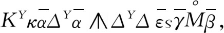
把所有负项都写在正项之后。加法、乘法和除法的运算记号是没有的。符号
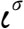
（至少在《算术》一书的现存译本里）用来表示相等。代数式的系数都是特定的数；他不用表示一般系数的符号。因他确实用了一套记号，所以后人把丢番图的代数称作缩写代数，而把埃及、巴比伦、赫伦和尼科马修斯的代数称作文字叙述代数。丢番图的解题步骤是像我们写散文那样一个字接着一个字写的。他做的运算是纯算术性的，不求助于几何直观来作具体说明。例如，（x-1）（x-2）就像我们今天做的那样用代数方法算出。他也在以p代x＋2和以q代x＋3之类的式子里应用
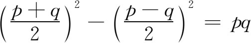
之类的恒等式。就是说，他采取了应用恒等式的步骤，但并未明确提到恒等式本身。
《算术》第一篇的内容主要是那些引出确定的一元或多元一次方程的问题。其余五篇的内容主要是论述二次不定方程。不过内容的划分并不拘泥于这一标准。在含多于一个未知量的确定方程（得出唯一解的方程）的场合下，他利用题中所给定的情况，把除一个未知量以外的所有未知量消掉，而在最不利的场合下最后得出形如ax2＝b的二次方程。例如，第一篇的题27说：求两数使其和为20而乘积为96。丢番图是这样解的：给定和20，给定乘积96，2x为所求两数之差。于是两数是10＋x与10-x。因此有100-x2＝96。于是x＝2，而所求的数是12与8。
丢番图代数的最突出之点是他对不定方程的解法。这种方程以前也有人考察过，例如在毕达哥拉斯派解
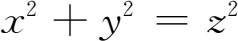
的著作中。在阿基米德的牛群问题里（它引出含八个未知量的七个方程，外加两个补充条件），以及在其他一些零星的著作里都见过。但丢番图则对此作了广泛的研究，并且是这门代数的创立人，而这门代数如今确实就称作丢番图分析。他解出了含两个未知量的一次方程，如
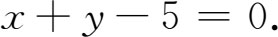
对这种方程，他给一个未知量指定一值，然后解出另一未知量的正有理值。他认识到指定给第一个未知量的值仅仅是代表性的。（在现代丢番图分析里只求整数解。）解这类方程不费什么劲，所做的工作也不值得一提，因为正有理数解很容易求出。
然后他解含有两个未知量的二次方程，其最一般的形式是（用我们的记号）：
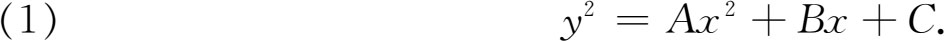
丢番图并未写出y2，但他说这二次式必须等于一平方数（有理数的平方），他对于特定的A，B和C值考察（1）并分成不同的情形来处理。例如当方程中无C时，他设y＝mx/n（其中m及n是特定整数）而得出
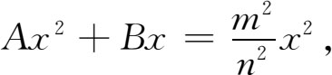
然后消去x而解出方程。当A与C不等于零而A＝a2时，他设y＝ax-m。若C＝c2，他设y＝（mx-c）。在所有这些情形下，m是特定的数。
他也论述联立二次方程的情形，如
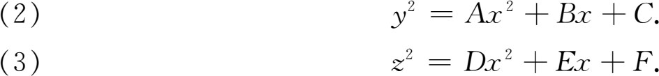
这里他也只讨论特殊情形，即当A，B，…，F是些特定的数或满足特定条件时的情形，他所用的方法是假定y和z是用x表示的一些式子，然后解出x。
实际上他是在解一个未知量的确定方程。但他知道在（2）和（3）中给y和z以及在（1）中给y选定了表达式，他只不过是给出了代表性的解，而且指定给y和z的值是颇为任意的。
他又提出x的三次或高次式必须等于一数的平方的那种问题，即
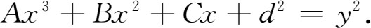
这里他设y＝mx＋d，并选定m，使x的系数等于零。由于两边的d2项消掉了，故可用x2遍除两边，而得x的一次方程。此外他还考虑x的二次式等于y3的特殊情形。
他所用的所有x的二次式归结为如下几类：
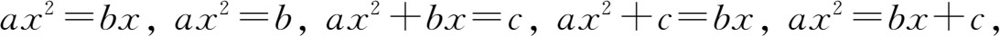
并解出每一类的这种方程。对x的三次式，他只解出过一个并不重要的情形。
上述方程说明丢番图所解问题的类型。至于问题的实际措词，可举下面几个例子来说明：
第一篇，问题8．把一给定平方数分成两个平方数。
这里他取16作为给定的平方数，得出256/25和144/25。这个问题经费马（Pierre de Fermat）加以推广，使他提出
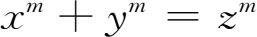
当m＞2时就无解。第二篇，问题9．已给一数为两个平方数之和，把它分为另外两个平方数之和。
他取13＝4＋9作为所给的数，得出结果是324/25及1/25。
第三篇，问题6．求三个数，使它们的和以及它们之中任两数的和都是平方数。
丢番图给出80，320和41作为这样的三个数。
第四篇，问题1．把一给定的数分为两个立方数，并使其每边之和为给定的数。
他以370为给定的数，以10为给定的两边之和，他得出343及27。所谓边是指立方数的立方根。
第四篇，问题29．把一给定的数表示为四个平方数与其各边之和。
以12为给定的数，他得出四平方数为121/100，49/100，361/100，169/100，它们的边是每个平方数的平方根。
丢番图在第六篇中解出了一些关于直角三角形边长（有理数）的问题。虽然出现面积的字样，但几何用语只是偶然的。例如他的第一个问题是求一（有理边）直角三角形，使斜边减去每直角边后得出一立方数。这里他凑巧得出整数解40，96，104。但他一般得出的是有理数解答。
丢番图在把各类方程化成他能解的形式方面很有才能。我们不知道他是怎么得出他的方法来的。由于他并不依靠几何，很可能他是把欧几里得解二次方程的（几何）方法翻译成代数的。此外，欧几里得那里没有不定方程，而对丢番图来说这也是一类新的方程。由于我们对于亚历山大后期数学思想的连贯性缺乏资料，所以不能从丢番图前人的著作中找出他的工作的线索。据我们所知，他在纯代数学方面的工作和过去是显然不同的。
他只接受正有理根而忽略所有其他根。甚至当二次方程有两正根时，他也只给出较大的一个。当一个方程在求解过程中明显看出要有两个负根或虚根时，他就放弃这个方程，说它是不可解的。在出现无理根的情况下，他就倒算回去，指出怎样改变一下方程，就能使新方程具有有理根。这方面丢番图和阿基米德以及赫伦不同。赫伦是个测绘人员，他所要求的几何量可以是无理数。因此他接受无理数，但为得出有用的数值便取近似值。阿基米德也是想求准确解的，但当解是无理数时他就用不等式来限定它的范围。丢番图是个纯代数学家；由于他那个时代的代数不承认无理数、负数和复数，他就放弃具有这种解的方程。但值得指出的是，丢番图承认分数是数，而不仅仅把它看成是整数之比。
他没有一般性的方法。《算术》里的189个问题每个都用不同的方法解。他的问题共有50多种类型，但他没有试图进行分类。他的方法接近于巴比伦人的程度甚于接近他的希腊前辈，并且有些地方可以看出他受巴比伦人的影响。事实上，他确曾完全照巴比伦人那样解过一些问题。但迄今并无证据能说明丢番图的工作和巴比伦人的代数有直接联系。他在代数上超过巴比伦人的地方是引用了一套符号并且解了不定方程。对于确定的方程，他不比巴比伦人先进，但他的《算术》里吸收了计算技巧，而这种技巧和其他一些东西是被柏拉图排斥于数学之外的。
丢番图解个别问题所用方法之多使人目不暇给，但未能击节叹赏。他是个巧妙而聪明的解题能手，但显然不够深刻，未能看出他所用方法的实质而加以概括。（现今的丢番图分析仍然是由个别孤立问题组成的一团乱麻。）他不像一个探求普遍概念的深邃思想家，而只为了寻求正确的解答。他只有很少数的结果可说是具有一般性的意义——如形式为4n＋3的质数不能表为两平方之和等。欧拉（Leonhard Euler）确曾认为丢番图是用特例来说明一般方法的，因为那时候未能用字母来代表系数。还有别的人相信丢番图认识到他的材料是属于抽象的基本科学的。但这种观点并未为一切人所接受。不过整个说来他的工作在代数上是永垂不朽的。
今日数学里非常重要的一件事却在希腊代数里遗漏了，这就是用字母来代表一类数，例如方程中的系数。亚里士多德确曾在讨论运动时用希腊字母表示任一时间或任一距离，比如他说过“B的一半”这类话。欧几里得也在《原本》第七到九篇中用字母表示一类数，而且帕普斯也沿用这种做法。但他们都没有认识到字母表示法在增进代数方法的功效与其普遍性方面作用是何等巨大。
亚历山大时期代数的另一特色是缺乏任何明晰的演绎结构，整数、分数和无理数等各种类型的数肯定是未经定义的。他们也没有什么一套公理来建立演绎结构。赫伦、尼科马修斯和丢番图的著作以及阿基米德在算术方面的著作，读起来就像埃及人和巴比伦人的那种药方单子式的著作，只告诉你该怎么做。欧几里得和阿波罗尼斯著作里以及阿基米德几何里那种演绎的、条理井然的证明全然不见了。所解的问题都是归纳性质的，就是说它们所指明的解具体问题的方法虽然能应用于一般性的一类问题，但并未规定应用的范围能有多广。由于古典希腊学者所做的工作，使人觉得数学结果好像都是依据一组明文规定的公理用演绎法推出来似的，因此出现独立的一门算术和代数而竟无其自身的逻辑结构这种情况，就成为数学史上的一大问题。对算术和代数的这种研究方法最清楚不过地指明了埃及和巴比伦在亚历山大学术界里的影响。虽然亚历山大的希腊代数学家似乎一点不在乎这一缺陷，但以后可以看到这确使欧洲数学家深感不安。
参考书目
Ball，W．W．R．：A Short Account of the History of Mathematics，Dover（reprint），1960，Chaps．5 and 7．
Cajori，Florian：A History of Mathematics，Macmillan，1919，pp．52-62．
Heath，Thomas L．：Diophantus of Alexandria，Dover（reprint），1964．
Heath，Thomas L．：The Works of Archimedes，Dover（reprint），1953，Chaps．4 and 6 of the Introduction，pp．91-98，319-326．
Heath，Thomas L．：A History of Greek Mathematics，Oxford University Press，1921，Vol．1，Chaps．1-3；Vol．2，Chap．20．
Heath，Thomas L．：A Manual of Greek Mathematics，Dover（reprint），1963，Chaps．2-3，and 17．
D'Ooge，Martin Luther：Nichomachus of Gerasa，University of Michigan Press，1938．
van der Waerden，B．L．：Science Awakening，P．Noordhoff，1954，pp．278-286．
————————————————————
(1) 有些近代作家用
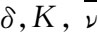
代替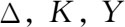
。